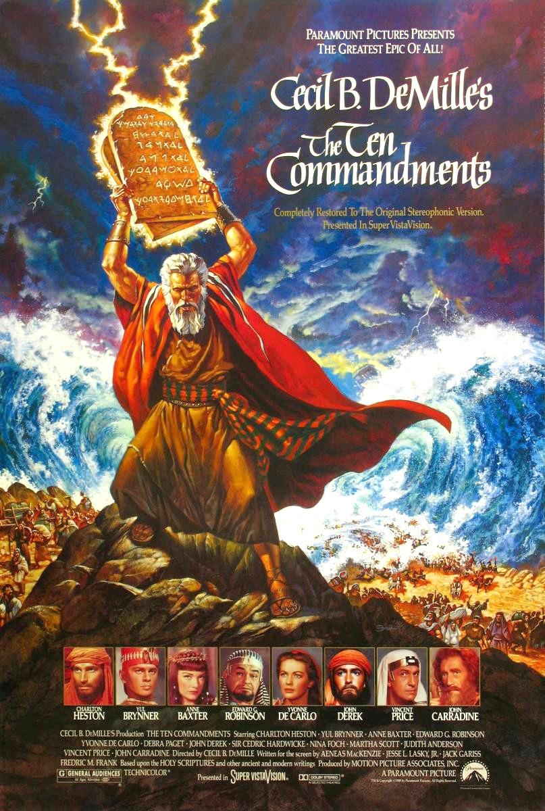

Top $10 Theater
 十誡（The Ten Commandments）—1956 《十誡》（The Ten Commandments）是1956年派拉蒙電影公司製作的一部史詩電影，故事取材自《舊約聖經》的《出埃及記》， 講述猶太先知摩西領導以色列人出走埃及，並於接受上帝耶和華頒布的「十誡」的故事。 該片導演是西席·地密爾，飾演摩西的是查爾登·希士頓。地密爾亦曾在1923年導演了同名的無聲電影《十誡》。 講述摩西剛出生時，埃及法老下令殺盡希伯來男嬰的「白色恐怖」時期。摩西的父母不敢私藏，便把他放在籃子裡順流而下，盼有人收養。 法老的女兒發現摩西，收為自己的兒子。摩西長大後對埃及人奴役希伯來人越來越看不慣。一次，他失手打死一個欺負希伯來人的埃及人。 法老王知道此事後要懲罰摩西，於是失去母親保護的他逃往米甸地居住，開始他四十年的牧羊生涯，併在米甸地結婚生子。 其間耶和華將十誡授與摩西，並賜予摩西力量讓其帶領苦難的希伯來人從埃及人的奴役下走出來。 在經過一番苦難之後希伯來人在摩西的帶領下終於渡過紅海，在曠野上重建新生活。 通貨膨脹計算器（1956-2015，單位：美元）：